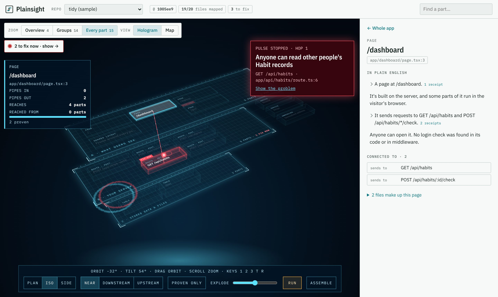
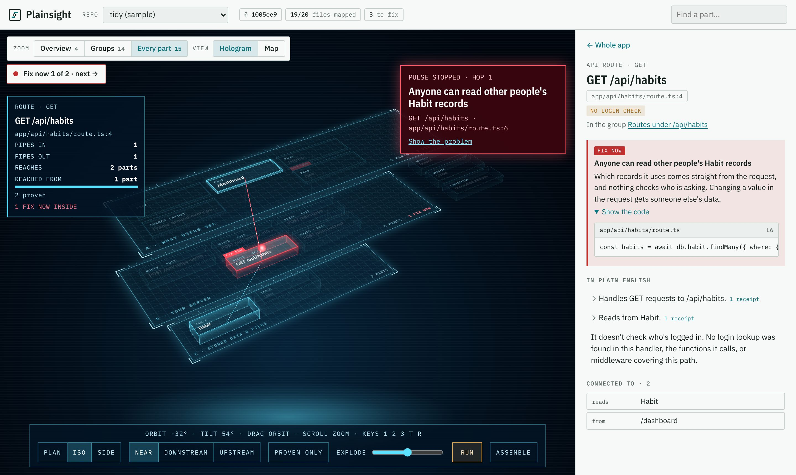
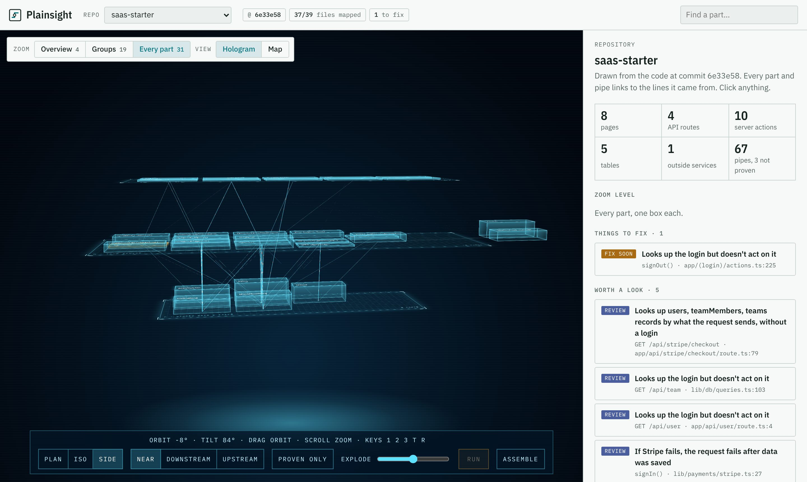

Plainsight reads your Next.js app and draws it as a living schematic: every page, route, table and outside service, and the pipes between them. It finds the security holes AI-written code tends to have, and links every box, line and sentence to the code that proves it.
1–4 s on real apps0 bytes uploaded1 offline HTML reportMIT licensed

Run from /dashboard: the pulse stops at the first problem it reaches. app/api/habits/route.ts:6
What it finds
The bugs that work fine in the demo.
Each finding is a plain sentence about what can happen, with the exact lines from the entry point to the problem. These three come from Plainsight's test apps; the first and last are in the live demo.
FIX NOW
Anyone can read other people's Habit records
Which records it returns comes straight from the request, and nothing checks who is asking.
Also: secret keys bundled into the browser, login checks that only cover one case, calls to routes that don't exist, and outside calls that can fail after data was saved.
How it works
It reads the code. It never guesses.
Reads your app
The TypeScript compiler follows every page, route, server action and helper across files: Prisma, Drizzle, Supabase, Stripe and other SDKs, wrappers and middleware.
Draws what it found
Parts become towers, pipes become light flowing the way the data goes. Turn it, pull the layers apart, or switch to a flat map. Big apps get Overview, Groups and Every part.
Shows its receipts
Click anything: a plain-English explanation, and the lines of code behind every sentence. Trace upstream or downstream, or press Run and watch where a request goes.
Every claim opens to the code.
Findings in order, page to route to query, so you see how the problem is reached.
Plain English for every part: what it is, what it calls, whether it checks the login.
Coverage of what was read, left out and unreachable, so you know what the drawing covers.

Accurate, not decorated
Every pipe says how sure it is.
A wrong "Fix now" is worse than none, so Plainsight labels what the code can't prove instead of drawing it as fact.
ProvenTraced in your code, with the lines to show for it.
LibraryKnown behavior of a library you use, such as Supabase running a call only for the logged-in user.
InferredLikely, but set outside the code, such as Stripe calling your webhook.
UnresolvedThe code doesn't say, such as an address read from a setting at runtime.
What it can't see yet. Plainsight reads structure and never runs your app. A check done after a lookup isn't recognised, login helpers with unusual names show as "no login check", and it reads Next.js and plain static sites only, for now.
Tested by hand on taxonomy, saas-starter, ai-chatbot, chatbot-ui, nextjs-subscription-payments and dub. Every pattern is a regression test.
Big apps
The load-bearing code is the skyline.
Parts stand as tall as the number of pipes coming in. Side view shows at a glance what everything depends on, and Overview, Groups and Every part keep a thousand files readable.

In CI
Block pull requests that open a hole.
The GitHub Action fails the check on "Fix now" findings, writes the findings table into the run summary, and attaches the report.